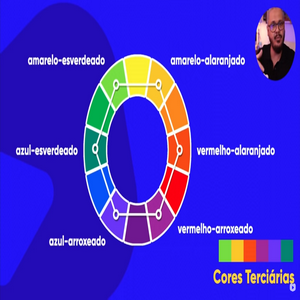
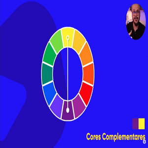
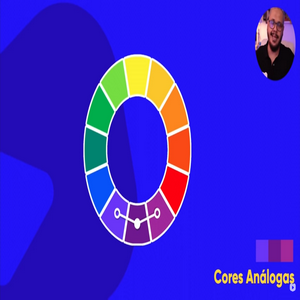
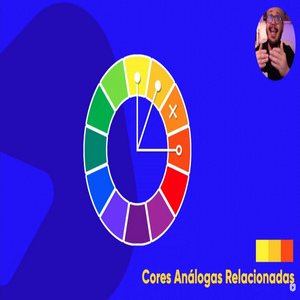
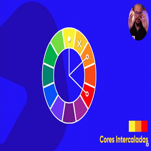
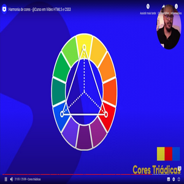
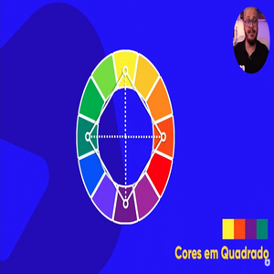
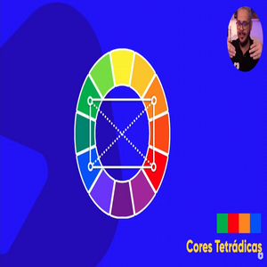
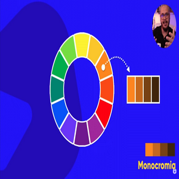

São as misturas de cores que estão entre uma cor primária e uma cor secundária.
Sempre serão representadas pelos nomes da primárias acompanhada da cor secundária.
nas cores terciárias existem os tons pastéis
Branco e preto sempre estarão
As paletas São compostas por de 3 a 5 cores no máximo
Cores complementares são as cores que são diretamente opostas as que escolhermos como principal
São as cores que não tem muito contrastes entre si, mas é perceptível... cores diretamente vizinhas, não tem contraste, mas há Harmonia
Cores análogas e uma complementar
Duas cores vizinhas, pula uma casa de pega a próxima
Uma cor, pula uma casa, segunda cor, pula outra casa, terceira cor
Cores Triádicas - intervalo entre 3 cores - forma um triânguloo
Cores em quadrado - intervalo ente 2 cores - forma uma quadrado
2 cores principais e suas complementares
São cores únicas que são modificas apenas a saturação e luminosidades para encontrar sua paleta... usando HSL - hue , saturation , luminosity
